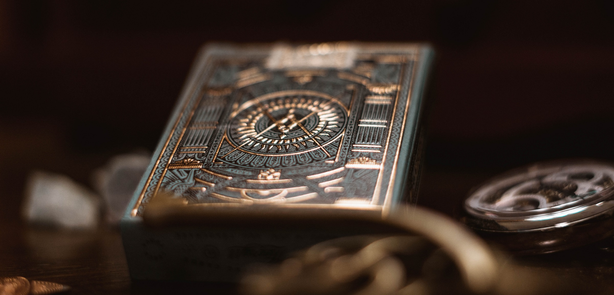

Les decks de base sont là !
Actuellement, il y a 10 decks de bases différents, chacun correspondant à une carte 4* du jeu. Le choix de son premier deck de départ sera important !
Avez-vous déjà fait votre choix ?